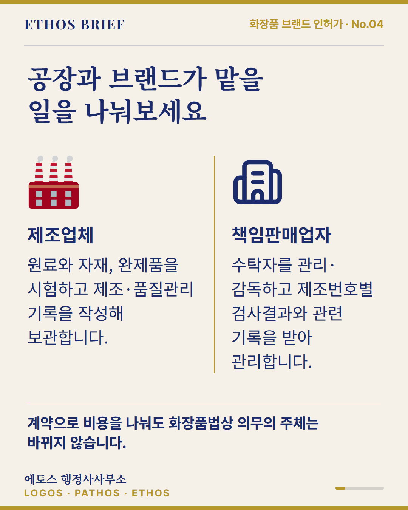
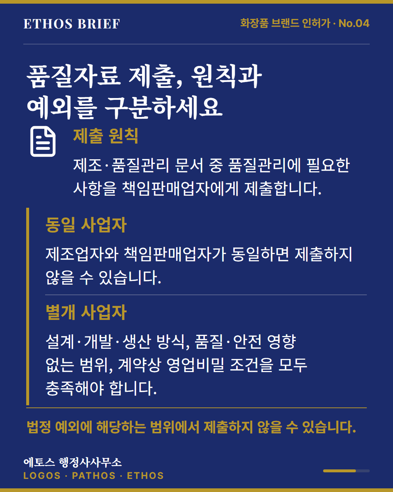
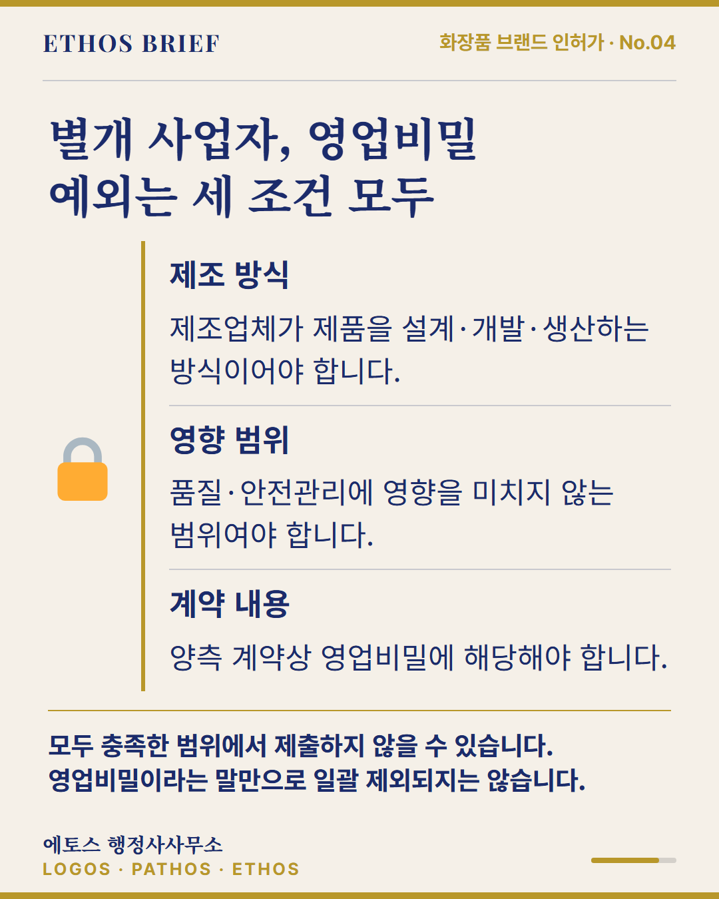

OEM 카드 2·7~9 문장·배치 비교
사용자 채택 버전 · 공통 지침 반영 · 실제 발행은 별도
기존 승인 원고와 나머지 6장 보존. 두 버전은 동일 Chromium에서 1080×1350으로 렌더했습니다.
2번은 역할 설명을 넓은 행으로, 7번은 제출 원칙과 예외를 문장으로, 8번은 세 조건을 완결된 설명으로 정리했습니다. 9번의 원문 인용은 그대로 두고 상황별 확인 행동을 풀었습니다. 글자를 자동 축소하지 않았습니다.
같은 기준 재평가: 77 → 83점
표지·카피 3→4 / 가독성 4→4 / 흐름 4→4 / 사실·형식 5→5. 가중치 2:2:1:1, 정확 환산 76.7→83.3. 주관 편집 평가이며 실제 성과 상승률은 아닙니다.
2번 본문 4·5줄→2·3줄, 글씨 크기 유지. 7번은 조건을 풀어 써 문량 증가: 201→235자. QA는 통과했지만 여전히 조밀합니다. 원본 225파일·블로그·나머지 6장 보존.
카드 2
기존 VISUAL
문장·배치 개선 초안
문구 변경 보기
| 구간 | 기존 | 초안 |
|---|
| body | [{"key": "제조업체", "text": "원료와 자재, 완제품을 시험하고 제조·품질관리 기록을 작성해 보관합니다."}, {"key": "책임판매업자", "text": "수탁자를 관리·감독하고 제조번호별 검사결과와 관련 기록을 받아 관리합니다."}] | [{"key": "제조업체", "text": "원료와 자재, 완제품을 시험합니다. 제조·품질관리 기록도 작성해 보관합니다."}, {"key": "책임판매업자", "text": "수탁자를 관리·감독합니다. 제조번호별 검사결과와 관련 기록을 받아 관리합니다."}] |
|---|
카드 7
기존 VISUAL
문장·배치 개선 초안
문구 변경 보기
| 구간 | 기존 | 초안 |
|---|
| body | [{"key": "제출 원칙", "text": "제조·품질관리 문서 중 품질관리에 필요한 사항을 책임판매업자에게 제출합니다."}, {"key": "동일 사업자", "text": "제조업자와 책임판매업자가 동일하면 제출하지 않을 수 있습니다."}, {"key": "별개 사업자", "text": "설계·개발·생산 방식, 품질·안전 영향 없는 범위, 계약상 영업비밀 조건을 모두 충족해야 합니다."}] | [{"key": "제출 원칙", "text": "제조업자는 제조·품질관리 문서 중 품질관리에 필요한 사항을 책임판매업자에게 제출합니다."}, {"key": "동일 사업자", "text": "제조업자와 책임판매업자가 동일하면 제출하지 않을 수 있습니다."}, {"key": "별개 사업자: 세 조건 모두", "text": "제조업자가 제품을 설계하고 개발해 생산하는 방식이어야 합니다. 품질·안전관리에 영향이 없고 양측 계약상 영업비밀인 범위여야 합니다."}] |
|---|
카드 8
기존 VISUAL
문장·배치 개선 초안
문구 변경 보기
| 구간 | 기존 | 초안 |
|---|
| body | [{"key": "제조 방식", "text": "제조업체가 제품을 설계·개발·생산하는 방식이어야 합니다."}, {"key": "영향 범위", "text": "품질·안전관리에 영향을 미치지 않는 범위여야 합니다."}, {"key": "계약 내용", "text": "양측 계약상 영업비밀에 해당해야 합니다."}] | [{"key": "제조 방식", "text": "제조업체가 제품을 설계하고 개발해 생산하는 방식이어야 합니다."}, {"key": "영향 범위", "text": "품질·안전관리에 영향을 미치지 않는 범위여야 합니다."}, {"key": "계약 내용", "text": "양측 계약에서 영업비밀로 정한 내용이어야 합니다."}] |
|---|
카드 9
기존 VISUAL 문장·배치 개선 초안
문장·배치 개선 초안
문구 변경 보기
| 구간 | 기존 | 초안 |
|---|
| note | "위 문구는 원문의 예시입니다. 사양 변경·검사 불일치·판매 후 문의의 협의 및 자료 담당자도 확인합니다." | "위 문구는 원문의 예시입니다. 사양이 변경되거나 검사결과가 맞지 않을 때, 판매 후 문의가 생겼을 때 누구와 협의하고 누가 자료를 맡는지도 확인합니다." |
|---|
검수·같은 기준 재평가 · 법률 조건 대조 · 측정 지표
Emoji graphics: Twemoji © Twitter and contributors, CC BY 4.0. https://creativecommons.org/licenses/by/4.0/ · Lucide ISC/MIT. 자산 출처·라이선스